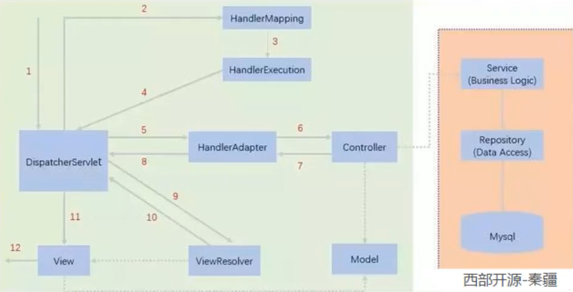
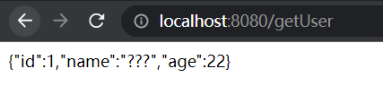

SpringMVC笔记
SpringMVC笔记

SpringMVC
1、SpringMVC执行原理
- 用户访问后首先被web.xml中的DispatchServlet拦截下来
- DispatchServlet调用HandlerMapping处理器映射，HandlerMapping根据请求url查找Handler
- HandlerExecution根据url到springmvc-servlet.xml中查找控制器controller，并将解析后的信息传递给DispatchServlet
- HandlerAdapter为处理器适配器，按照特定的规则执行Handler
- Handler让具体的controller执行
- controller将执行信息(ModelAndView)返回给HandlerAdapter
- HandlerAdapter将视图逻辑名或模型传递给DispatchServlet
- DispatchServlet调用视图解析器(ViewResolver)来解析HandlerAdapter传递的逻辑视图名
- 视图解析器ViewResolver将解析的逻辑视图名传给DispatchServlet
- DispatchServlet根据视图解析器解析的结果，调用具体的视图 
web.xml
<?xml version="1.0" encoding="UTF-8"?>
<web-app xmlns="http://xmlns.jcp.org/xml/ns/javaee"
xmlns:xsi="http://www.w3.org/2001/XMLSchema-instance"
xsi:schemaLocation="http://xmlns.jcp.org/xml/ns/javaee http://xmlns.jcp.org/xml/ns/javaee/web-app_4_0.xsd"
version="4.0">
<!--注册DispatchServlet-->
<servlet>
<servlet-name>springmvc</servlet-name>
<servlet-class>org.springframework.web.servlet.DispatcherServlet</servlet-class>
<!--关联一个springmvc配置文件：【servlet-name】-servlet.xml-->
<init-param>
<param-name>contextConfigLocation</param-name>
<param-value>classpath:springmvc-servlet.xml</param-value>
</init-param>
<!--启动级别-1-->
<load-on-startup>1</load-on-startup>
</servlet>
<!--/匹配所有请求：（不包括.jsp）-->
<!--/*匹配所有请求（包括.jsp）-->
<servlet-mapping>
<servlet-name>springmvc</servlet-name>
<url-pattern>/</url-pattern>
</servlet-mapping>
</web-app>
springmvc-servlet.xml
<?xml version="1.0" encoding="UTF-8"?>
<beans xmlns="http://www.springframework.org/schema/beans"
xmlns:xsi="http://www.w3.org/2001/XMLSchema-instance"
xsi:schemaLocation="http://www.springframework.org/schema/beans http://www.springframework.org/schema/beans/spring-beans.xsd">
<bean class="org.springframework.web.servlet.handler.BeanNameUrlHandlerMapping"/>
<bean class="org.springframework.web.servlet.mvc.SimpleControllerHandlerAdapter"/>
<!--视图解析器：DispatcherServlet返回的ModelAndView-->
<bean class="org.springframework.web.servlet.view.InternalResourceViewResolver" id="internalResourceViewResolver">
<!--前缀-->
<property name="prefix" value="/WEB-INF/jsp/"/>
<!--后缀-->
<property name="suffix" value=".jsp"/>
</bean>
</beans>
HelloController.java (实现了Controller接口就成为了一个视图解析器，返回ModelAndView)
public class HelloController implements Controller {
@Override
public ModelAndView handleRequest(HttpServletRequest httpServletRequest, HttpServletResponse httpServletResponse) throws Exception {
//ModelAndView模型和视图
ModelAndView mv = new ModelAndView();
//封装对象放在ModelAndView中
mv.addObject("msg", "HelloSpringMVC");
//封装要跳转的视图放在ModelAndView中
mv.setViewName("hello"); ///WEB-INF/jsp/hello.jsp
//返回ModelAndView
return mv;
}
}
在spring-servlet.xml中注册bean，id对应请求路径，class对应视图解析器
<!--Handler-->
<bean id="/hello" class="com.wzc.controller.HelloController"/>
2、使用注解开发
配置资源过滤问题
<build>
<resources>
<resource>
<directory>src/main/java</directory>
<includes>
<include>**/*.properties</include>
<include>**/*.xml</include>
</includes>
<filtering>false</filtering>
</resource>
<resource>
<directory>src/main/resources</directory>
<includes>
<include>**/*.properties</include>
<include>**/*.xml</include>
</includes>
<filtering>false</filtering>
</resource>
</resources>
</build>
web.xml注册DispatchServlet
<?xml version="1.0" encoding="UTF-8"?>
<web-app xmlns="http://xmlns.jcp.org/xml/ns/javaee"
xmlns:xsi="http://www.w3.org/2001/XMLSchema-instance"
xsi:schemaLocation="http://xmlns.jcp.org/xml/ns/javaee http://xmlns.jcp.org/xml/ns/javaee/web-app_4_0.xsd"
version="4.0">
<!--注册DispatchServlet-->
<servlet>
<servlet-name>springmvc</servlet-name>
<servlet-class>org.springframework.web.servlet.DispatcherServlet</servlet-class>
<!--关联一个springmvc配置文件：【servlet-name】-servlet.xml-->
<init-param>
<param-name>contextConfigLocation</param-name>
<param-value>classpath:springmvc-servlet.xml</param-value>
</init-param>
<!--启动级别-1-->
<load-on-startup>1</load-on-startup>
</servlet>
<!--/匹配所有请求：（不包括.jsp）-->
<!--/*匹配所有请求（包括.jsp）-->
<servlet-mapping>
<servlet-name>springmvc</servlet-name>
<url-pattern>/</url-pattern>
</servlet-mapping>
</web-app>
springmvc-servlet.xml配置文件
<?xml version="1.0" encoding="UTF-8"?>
<beans xmlns="http://www.springframework.org/schema/beans"
xmlns:xsi="http://www.w3.org/2001/XMLSchema-instance"
xmlns:context="http://www.springframework.org/schema/context"
xmlns:mvc="http://www.springframework.org/schema/mvc"
xsi:schemaLocation="http://www.springframework.org/schema/beans
http://www.springframework.org/schema/beans/spring-beans.xsd
http://www.springframework.org/schema/context
https://www.springframework.org/schema/context/spring-context.xsd
http://www.springframework.org/schema/mvc
https://www.springframework.org/schema/mvc/spring-mvc.xsd">
<!--自动扫描包，让指定包下的注解生效，有IOC容器统一管理-->
<context:component-scan base-package="com.wzc.controller"/>
<!--让Spring MVC不处理静态资源-->
<mvc:default-servlet-handler/>
<!--支持mvc注解驱动，在spring中一般采用@RequestMapping注解来完成映射关系，
要使RequestMapping注解生效必须向上下文注册DefaultAnnotationHandlerMapping和AnnotationMethodHandlerAdapter实例，
这两个实例分别在类级别和方法级别处理，annotation-driven配置帮助我们自动完成两个实例的注入-->
<mvc:annotation-driven/>
<!--视图解析器-->
<bean class="org.springframework.web.servlet.view.InternalResourceViewResolver" id="internalResourceViewResolver">
<property name="prefix" value="/WEB-INF/jsp/"/>
<property name="suffix" value=".jsp"/>
</bean>
</beans>
HelloController.java
@Controller
@RequestMapping("/api")
public class HelloController {
@RequestMapping("/hello")
public String hello(Model model) {
//封装数据
model.addAttribute("msg", "hello annotation");
//视图解析器解析WEB-INF/jsp/hello.jsp
return "hello";
}
}
使用Spring MVC必须配置的三大件：处理器映射器、处理器配置器、视图解析器
通常我们只需手动配置视图解析器，处理器映射器和处理器配置器只需要开启注解驱动即可，省去了大量的xml配置
3、Controller和RestFul风格
3.1、实现Controller接口
public class HelloController implements Controller {
@Override
public ModelAndView handleRequest(HttpServletRequest httpServletRequest, HttpServletResponse httpServletResponse) throws Exception {
//ModelAndView模型和视图
ModelAndView mv = new ModelAndView();
//封装对象放在ModelAndView中
mv.addObject("msg", "HelloSpringMVC");
//封装要跳转的视图放在ModelAndView中
mv.setViewName("hello"); ///WEB-INF/jsp/hello.jsp
//返回ModelAndView
return mv;
}
}
缺点：一个controller中只能实现一个方法
3.2、使用注解@Controller
- 开启自动扫描
<context:component-scan base-package="com.wzc.controller"/>
- 在类上添加@Controller注解
- 在方法上添加@RequestMapping
3.3、@RequestMapping
RequestMapping注解用于映射url到控制器类或一个特定的方法，可同时注解在类和方法上
访问时的顺序是类/方法
3.4、RestFul风格
RestFul风格可以通过不同的请求方式来实现不同的效果，比如：
- http://127.0.0.1/item/1————查询, GET
- http://127.0.0.1/item————新增, POST
- http://127.0.0.1/item————修改, PUT
- http://127.0.0.1/item————删除, DELETE
在SpringMVC中可以使用@PathVariable注解，让方法的参数值对应绑定到一个url模板变量上
@Controller
public class RestFulController {
@RequestMapping("/add/{a}/{b}")
public String add(@PathVariable("a") int a, @PathVariable("b") int b, Model model) {
model.addAttribute("msg", a + b);
return "restful";
}
}
注解介绍：
@GetMapping("\hello")表示get请求
@PostMapping("\hello")表示post请求
@PutMapping("\hello")表示put请求
@DeleteMapping("\hello")表示delete请求
使用路径变量的好处：
- 使路径变得更加简洁
- 获得参数更加方便
3.5、重定向和转发
通过SpringMVC实现重定向和转发，无需视图解析器
@Controller
public class ForwardAndRedirect {
//转发一
@RequestMapping("/ForwardAndRedirect/forward1")
public String forward1(Model model) {
model.addAttribute("msg", "转发到restful.jsp");
return "/WEB-INF/jsp/restful.jsp";
}
//转发二
@RequestMapping("/ForwardAndRedirect/forward2")
public String forward2() {
return "forward:/index.jsp";
}
//重定向（重定向不走视图解析器，并且重定向不能访问WEB-INF下的内容）
@RequestMapping("/ForwardAndRedirect/redirect")
public String redirect() {
return "redirect:/index.jsp";
}
}
3.6、SpringMVC参数接收
@Controller
@RequestMapping("/user")
public class UserController {
@GetMapping("/get")
public String get(@RequestParam("username") String name, Model model) {
model.addAttribute("msg", name);
return "/WEB-INF/jsp/restful.jsp";
}
@GetMapping("getUser")
public void getUser(User user) {
System.out.println(user);
}
}
在使用实体类接收参数时，前端需要将参数名与实体类变量名称一一对应，否则无法接收到所传参数
3.7、乱码问题
在post请求中，前端传递中文时会产生乱码问题
方法一：使用过滤器解决乱码
public class EncodingFilter implements Filter {
@Override
public void doFilter(ServletRequest servletRequest, ServletResponse servletResponse, FilterChain filterChain) throws IOException, ServletException {
servletRequest.setCharacterEncoding("utf-8");
servletResponse.setCharacterEncoding("utf-8");
filterChain.doFilter(servletRequest, servletResponse);
}
}
web.xml中配置filter
<web-app>
<filter>
<filter-name>encodingFilter</filter-name>
<filter-class>com.wzc.filter.EncodingFilter</filter-class>
</filter>
<filter-mapping>
<filter-name>encodingFilter</filter-name>
<!--/不包括jsp页面-->
<!--/*包括jsp页面-->
<url-pattern>/*</url-pattern>
</filter-mapping>
</web-app>
方法二：springmvc提供的编码过滤器
<web-app>
<filter>
<filter-name>encoding</filter-name>
<filter-class>org.springframework.web.filter.CharacterEncodingFilter</filter-class>
<init-param>
<param-name>encoding</param-name>
<param-value>utf-8</param-value>
</init-param>
</filter>
<filter-mapping>
<filter-name>encoding</filter-name>
<url-pattern>/*</url-pattern>
</filter-mapping>
</web-app>
4、JSON
4.1、Jackson
- 导包
<dependency>
<groupId>com.fasterxml.jackson.core</groupId>
<artifactId>jackson-databind</artifactId>
<version>2.11.3</version>
</dependency>
- 使用方法
@Controller
public class UserController {
@GetMapping("/getUser")
@ResponseBody
public String getUser() throws JsonProcessingException {
ObjectMapper mapper = new ObjectMapper();
User user = new User(1, "王子琛", 22);
String result = mapper.writeValueAsString(user);
return result;
}
}
乱码问题的解决方法： 
<!--Json乱码问题解决-->
<mvc:annotation-driven>
<mvc:message-converters>
<bean class="org.springframework.http.converter.StringHttpMessageConverter">
<constructor-arg value="UTF-8"/>
</bean>
<bean class="org.springframework.http.converter.cbor.MappingJackson2CborHttpMessageConverter">
<property name="objectMapper">
<bean class="org.springframework.http.converter.json.Jackson2ObjectMapperFactoryBean">
<property name="failOnEmptyBeans" value="false"/>
</bean>
</property>
</bean>
</mvc:message-converters>
</mvc:annotation-driven>
@Controller和@RestController的区别：
- @Controller会走是解析器
- @RestController会返回字符串
- @ResponseBody是配合@Controller来使用，如果使用了@RestController就不需要了
返回日期类型
@RestController
public class UserController {
@GetMapping("/getDate")
public String getDate() throws JsonProcessingException {
ObjectMapper mapper = new ObjectMapper();
//不使用时间戳方式返回Date
mapper.configure(SerializationFeature.WRITE_DATES_AS_TIMESTAMPS, false);
//自定义文件格式
mapper.setDateFormat(new SimpleDateFormat("yyyy-MM-dd HH:mm:ss"));
return mapper.writeValueAsString(new Date());
}
}
封装工具类JsonUtil
public class JsonUtil {
public static String getJson(Object object) {
return getJson(object, "yyyy-MM-dd HH:mm:ss");
}
public static String getJson(Object object, String format) {
ObjectMapper mapper = new ObjectMapper();
mapper.configure(SerializationFeature.WRITE_DATES_AS_TIMESTAMPS, false);
mapper.setDateFormat(new SimpleDateFormat(format));
try {
return mapper.writeValueAsString(object);
} catch (JsonProcessingException e) {
e.printStackTrace();
}
return null;
}
}
4.2、FastJson
- 导包
<dependency>
<groupId>com.alibaba</groupId>
<artifactId>fastjson</artifactId>
<version>1.2.75</version>
</dependency>
- 用法
- java对象转Json字符串
- JSON.toJSONString()
- Json字符串转java对象
- JSON.parseObject()
- java对象转Json对象
- JSON.toJSON()
- JSON对象转java对象
- JSON.parseJavaObject()
5、整合SSM
- 数据库
CREATE DATABASE `ssmbuild`;
USE `ssmbuild`;
CREATE TABLE `books`
(
`bookID` INT(10) NOT NULL auto_increment COMMENT 'id',
`bookName` VARCHAR(100) NOT NULL COMMENT '书名',
`bookCounts` INT(11) NOT NULL COMMENT '数量',
`detail` VARCHAR(200) NOT NULL COMMENT '描述',
KEY `bookID` (`bookID`)
) ENGINE = INNODB
DEFAULT CHARSET = utf8;
INSERT INTO `books`(`bookID`, `bookName`, `bookCounts`, `detail`)
VALUES (1, 'Java', 1, '从入门到放弃'),
(2, 'MySQL', 10, '从删库到跑路'),
(3, 'Linux', 5, '从进门到进牢');
- 导包和静态资源导出问题
<project>
<dependencies>
<dependency>
<groupId>mysql</groupId>
<artifactId>mysql-connector-java</artifactId>
<version>8.0.25</version>
</dependency>
<!--数据库连接池c3p0-->
<dependency>
<groupId>com.mchange</groupId>
<artifactId>c3p0</artifactId>
<version>0.9.5.2</version>
</dependency>
<dependency>
<groupId>org.mybatis</groupId>
<artifactId>mybatis</artifactId>
<version>3.5.6</version>
</dependency>
<dependency>
<groupId>org.mybatis</groupId>
<artifactId>mybatis-spring</artifactId>
<version>2.0.6</version>
</dependency>
<dependency>
<groupId>junit</groupId>
<artifactId>junit</artifactId>
<version>4.12</version>
</dependency>
<dependency>
<groupId>org.springframework</groupId>
<artifactId>spring-webmvc</artifactId>
<version>5.2.5.RELEASE</version>
</dependency>
<dependency>
<groupId>org.springframework</groupId>
<artifactId>spring-jdbc</artifactId>
<version>5.2.5.RELEASE</version>
</dependency>
<dependency>
<groupId>javax.servlet</groupId>
<artifactId>servlet-api</artifactId>
<version>2.5</version>
</dependency>
<dependency>
<groupId>javax.servlet.jsp</groupId>
<artifactId>jsp-api</artifactId>
<version>2.2</version>
</dependency>
<dependency>
<groupId>javax.servlet</groupId>
<artifactId>jstl</artifactId>
<version>1.2</version>
</dependency>
<dependency>
<groupId>com.alibaba</groupId>
<artifactId>fastjson</artifactId>
<version>1.2.75</version>
</dependency>
<dependency>
<groupId>org.projectlombok</groupId>
<artifactId>lombok</artifactId>
<version>1.18.16</version>
</dependency>
</dependencies>
<build>
<resources>
<resource>
<directory>*/src/main/java</directory>
<includes>
<include>**/*.properties</include>
<include>**/*.xml</include>
</includes>
<filtering>false</filtering>
</resource>
<resource>
<directory>*/src/main/resources</directory>
<includes>
<include>**/*.properties</include>
<include>**/*.xml</include>
</includes>
<filtering>false</filtering>
</resource>
</resources>
</build>
</project>
5.1、Mybatis层
- mybatis-config.xml
<?xml version="1.0" encoding="UTF-8"?>
<!DOCTYPE configuration PUBLIC "-//mybatis.org//DTD Config 3.0//EN"
"http://mybatis.org/dtd/mybatis-3-config.dtd">
<configuration>
<!--配置数据源，交给Spring去做-->
<typeAliases>
<package name="com.wzc.pojo"/>
</typeAliases>
<mappers>
<package name="com.wzc.mapper"/>
</mappers>
</configuration>
- Books
@Data
@AllArgsConstructor
@NoArgsConstructor
public class Books {
private int bookID;
private String bookName;
private int bookCounts;
private String detail;
}
- BookMapper
public interface BookMapper {
int addBook(Books book);
int deleteBookById(@Param("Id") int id);
int updateBook(Books book);
Books queryBookById(@Param("Id") int id);
List<Books> queryAllBook();
}
- BookMapper.xml
<?xml version="1.0" encoding="UTF-8"?>
<!DOCTYPE mapper PUBLIC "-//mybatis.org//DTD Mapper 3.0//EN"
"http://mybatis.org/dtd/mybatis-3-mapper.dtd">
<mapper namespace="com.wzc.com.wzc.controller.mapper.BookMapper">
<insert id="addBook" parameterType="Books">
insert into ssmbuild.books(bookID, bookName, bookCounts, detail) VALUES (#{bookID}, #{bookName}, #{bookCounts}, #{detail})
</insert>
<delete id="deleteBookById" parameterType="int">
delete from ssmbuild.books where bookID = #{id}
</delete>
<update id="updateBook" parameterType="Books">
update ssmbuild.books set bookName = #{bookName}, bookCounts = #{bookCounts}, detail = #{detail} where bookID = #{bookId}
</update>
<select id="queryBookById" parameterType="int" resultType="Books">
select bookID, bookName, bookCounts, detail from ssmbuild.books where bookID = #{id}
</select>
<select id="queryAllBook" resultType="Books">
select bookID, bookName, bookCounts, detail from ssmbuild.books;
</select>
</mapper>
- BookService
public interface BookService {
int addBook(Books book);
int deleteBookById(@Param("Id") int id);
int updateBook(Books book);
Books queryBookById(@Param("Id") int id);
List<Books> queryAllBook();
}
- BookServiceImpl
public class BookServiceImpl implements BookService {
private BookMapper bookMapper;
public void setBookMapper(BookMapper bookMapper) {
this.bookMapper = bookMapper;
}
@Override
public int addBook(Books book) {
return bookMapper.addBook(book);
}
@Override
public int deleteBookById(int id) {
return bookMapper.deleteBookById(id);
}
@Override
public int updateBook(Books book) {
return bookMapper.updateBook(book);
}
@Override
public Books queryBookById(int id) {
return bookMapper.queryBookById(id);
}
@Override
public List<Books> queryAllBook() {
return bookMapper.queryAllBook();
}
}
5.2、Spring层
spring-dao.xml
<?xml version="1.0" encoding="UTF-8"?>
<beans xmlns="http://www.springframework.org/schema/beans"
xmlns:xsi="http://www.w3.org/2001/XMLSchema-instance"
xmlns:context="http://www.springframework.org/schema/context"
xsi:schemaLocation="http://www.springframework.org/schema/beans
http://www.springframework.org/schema/beans/spring-beans.xsd
http://www.springframework.org/schema/context
https://www.springframework.org/schema/context/spring-context.xsd">
<!--关联数据库配置文件-->
<context:property-placeholder location="classpath:database.properties"/>
<!--连接池
dbcp：半自动化操作，不能自动连接
c3p0：自动化操作（自动化加载配置文件并自动设置到对象中）
druid，hikari-->
<bean id="datasource" class="com.mchange.v2.c3p0.ComboPooledDataSource">
<property name="driverClass" value="${jdbc.driver}"/>
<property name="jdbcUrl" value="${jdbc.url}"/>
<property name="user" value="${jdbc.username}"/>
<property name="password" value="${jdbc.password}"/>
<!--c3p0私有属性-->
<property name="maxPoolSize" value="30"/>
<property name="minPoolSize" value="10"/>
<!--关闭连接后不自动commit-->
<property name="autoCommitOnClose" value="false"/>
<!--获取连接超时时间-->
<property name="checkoutTimeout" value="10000"/>
<!--连接失败重试次数-->
<property name="acquireRetryAttempts" value="2"/>
</bean>
<!--sqlSessionFactory-->
<bean id="sqlSessionFactory" class="org.mybatis.spring.SqlSessionFactoryBean">
<property name="dataSource" ref="datasource"/>
<!--绑定Mybatis配置文件-->
<property name="configLocation" value="classpath:mybatis-config.xml"/>
</bean>
<!--配置dao接口扫描包，动态实现了dao接口可以注入到spring容器中-->
<bean class="org.mybatis.spring.mapper.MapperScannerConfigurer">
<!--注入sqlSessionFactory-->
<property name="sqlSessionFactoryBeanName" value="sqlSessionFactory"/>
<!--要扫描的dao包-->
<property name="basePackage" value="com.wzc.mapper"/>
</bean>
</beans>
spring-service.xml
<?xml version="1.0" encoding="UTF-8"?>
<beans xmlns="http://www.springframework.org/schema/beans"
xmlns:xsi="http://www.w3.org/2001/XMLSchema-instance"
xmlns:context="http://www.springframework.org/schema/context"
xsi:schemaLocation="http://www.springframework.org/schema/beans
http://www.springframework.org/schema/beans/spring-beans.xsd http://www.springframework.org/schema/context https://www.springframework.org/schema/context/spring-context.xsd">
<!--扫描service下的包-->
<context:component-scan base-package="com.wzc.service"/>
<!--声明式事务配置-->
<bean id="transactionManager" class="org.springframework.jdbc.datasource.DataSourceTransactionManager">
<!--注入数据源-->
<property name="dataSource" ref="datasource"/>
</bean>
<!--aop事务支持-->
</beans>
5.3、SpringMVC层
spring-mvc.xml
<?xml version="1.0" encoding="UTF-8"?>
<beans xmlns="http://www.springframework.org/schema/beans"
xmlns:xsi="http://www.w3.org/2001/XMLSchema-instance"
xmlns:mvn="http://www.springframework.org/schema/mvc"
xmlns:context="http://www.springframework.org/schema/context"
xsi:schemaLocation="http://www.springframework.org/schema/beans
http://www.springframework.org/schema/beans/spring-beans.xsd
http://www.springframework.org/schema/mvc
https://www.springframework.org/schema/mvc/spring-mvc.xsd http://www.springframework.org/schema/context https://www.springframework.org/schema/context/spring-context.xsd">
<!--注解驱动-->
<mvn:annotation-driven/>
<!--静态资源配置过滤-->
<mvn:default-servlet-handler/>
<!--扫描包：controller-->
<context:component-scan base-package="com.wzc.controller"/>
<!--视图解析器-->
<bean class="org.springframework.web.servlet.view.InternalResourceViewResolver">
<property name="prefix" value="/WEB-INF/jsp/"/>
<property name="suffix" value=".jsp"/>
</bean>
</beans>
web.xml
<?xml version="1.0" encoding="UTF-8"?>
<web-app xmlns="http://xmlns.jcp.org/xml/ns/javaee"
xmlns:xsi="http://www.w3.org/2001/XMLSchema-instance"
xsi:schemaLocation="http://xmlns.jcp.org/xml/ns/javaee http://xmlns.jcp.org/xml/ns/javaee/web-app_4_0.xsd"
version="4.0">
<!--DispatchServlet-->
<servlet>
<servlet-name>springmvc</servlet-name>
<servlet-class>org.springframework.web.servlet.DispatcherServlet</servlet-class>
<init-param>
<param-name>contextConfigLocation</param-name>
<param-value>classpath:applicationContext.xml</param-value>
</init-param>
<load-on-startup>1</load-on-startup>
</servlet>
<servlet-mapping>
<servlet-name>springmvc</servlet-name>
<url-pattern>/</url-pattern>
</servlet-mapping>
<!--乱码过滤-->
<filter>
<filter-name>encodingFilter</filter-name>
<filter-class>org.springframework.web.filter.CharacterEncodingFilter</filter-class>
<init-param>
<param-name>encoding</param-name>
<param-value>utf-8</param-value>
</init-param>
</filter>
<filter-mapping>
<filter-name>encodingFilter</filter-name>
<url-pattern>/*</url-pattern>
</filter-mapping>
<!--Session-->
<session-config>
<session-timeout>15</session-timeout>
</session-config>
</web-app>
applicationContext.xml
<?xml version="1.0" encoding="UTF-8"?>
<beans xmlns="http://www.springframework.org/schema/beans"
xmlns:xsi="http://www.w3.org/2001/XMLSchema-instance"
xsi:schemaLocation="http://www.springframework.org/schema/beans
http://www.springframework.org/schema/beans/spring-beans.xsd">
<import resource="classpath:spring-dao.xml"/>
<import resource="classpath:spring-service.xml"/>
<import resource="classpath:spring-mvc.xml"/>
</beans>
6、拦截器
拦截器只会拦截controller中的方法，而不会拦截静态资源
实现InterceptorHandler接口就可以自定义一个拦截器
拦截器是AOP思想的具体应用
public class MyInterceptor implements HandlerInterceptor {
@Override
public boolean preHandle(HttpServletRequest request, HttpServletResponse response, Object handler) throws Exception {
// return true为放行，return false为拦截
return HandlerInterceptor.super.preHandle(request, response, handler);
}
@Override
public void postHandle(HttpServletRequest request, HttpServletResponse response, Object handler, ModelAndView modelAndView) throws Exception {
HandlerInterceptor.super.postHandle(request, response, handler, modelAndView);
}
@Override
public void afterCompletion(HttpServletRequest request, HttpServletResponse response, Object handler, Exception ex) throws Exception {
HandlerInterceptor.super.afterCompletion(request, response, handler, ex);
}
}
<!--拦截器配置-->
<mvc:interceptors>
<mvc:interceptor>
<mvc:mapping path="/**"/>
<bean class="com.wzc.config.MyInterceptor"/>
</mvc:interceptor>
</mvc:interceptors>
未登录用户拦截
main.jsp
<%@ page contentType="text/html;charset=UTF-8" language="java" %>
<html>
<head>
<title>首页</title>
</head>
<body>
<h1>首页</h1>
<p>${sessionScope.username}</p>
<a href="${pageContext.request.contextPath}/user/logout">注销</a>
</body>
</html>
login.jsp
<%@ page contentType="text/html;charset=UTF-8" language="java" %>
<html>
<head>
<title>登录</title>
</head>
<body>
<form action="${pageContext.request.contextPath}/user/login" method="post">
<label>用户名：</label>
<input type="text" name="username">
<label>密码：</label>
<input type="password" name="pwd">
<input type="submit" value="提交">
</form>
</body>
</html>
LoginController
@Controller
@RequestMapping("/user")
public class LoginController {
@GetMapping("/main")
public String main() {
return "main";
}
@GetMapping("/login")
public String login() {
return "login";
}
@PostMapping("/login")
public String login(Login login, HttpServletRequest request) {
request.getSession().setAttribute("username", login.getUsername());
return "main";
}
@GetMapping("/logout")
public String logout(HttpServletRequest request) {
request.getSession().removeAttribute("username");
return "login";
//如果要返回首页，需要写成return "redirect:/user/main"，否则需要点击两次注销才会被拦截
// 如果写成return "main"，返回的还是main.jsp，这时第一次点击注销时无法触发拦截器
}
}
LoginInterceptor
public class LoginInterceptor implements HandlerInterceptor {
@Override
public boolean preHandle(HttpServletRequest request, HttpServletResponse response, Object handler) throws Exception {
//如果session中有username或者访问登录页面就放行
if (request.getSession().getAttribute("username") != null || request.getRequestURI().toLowerCase().contains("login")) {
return true;
}
request.getRequestDispatcher("/WEB-INF/jsp/login.jsp").forward(request, response);
return false;
}
}
7、文件上传与下载
@RestController
@RequestMapping("/file")
public class FileController {
@PostMapping("/upload")
public String upload (@RequestParam("file")CommonsMultipartFile file, HttpServletRequest request) throws IOException {
String filename = file.getOriginalFilename();
if (StringUtils.isEmpty(filename)) {
return "redirect:/index.jsp";
}
String path = request.getServletContext().getRealPath("/upload");
File filepath = new File(path);
if (!filepath.exists()) {
filepath.mkdirs();
}
//读写文件
try (InputStream inputStream = file.getInputStream();
FileOutputStream fileOutputStream = new FileOutputStream(new File(filepath, filename));) {
int len = 0;
byte[] buffer = new byte[1024];
while ((len = inputStream.read(buffer)) != -1) {
fileOutputStream.write(buffer, 0, len);
fileOutputStream.flush();
}
}
return "上传成功！";
}
@PostMapping("/upload1")
public String upload1 (@RequestParam("file")CommonsMultipartFile file, HttpServletRequest request) throws IOException {
String path = request.getServletContext().getRealPath("/upload");
File filepath = new File(path);
if (!filepath.exists()) {
filepath.mkdirs();
}
//直接写文件
file.transferTo(new File(filepath + File.separator + file.getOriginalFilename()));
return "上传成功！";
}
@RequestMapping("download")
public void download(HttpServletRequest request, HttpServletResponse response, String filename) throws UnsupportedEncodingException {
//设置response响应头
response.reset();
response.setCharacterEncoding("UTF-8");
response.setContentType("multipart/form-data");
response.setHeader("Content-Disposition", "attachment;fileName=" + URLEncoder.encode(filename, "UTF-8"));
File file = new File(request.getServletContext().getRealPath("/upload"), filename);
try (FileInputStream fileInputStream = new FileInputStream(file);
ServletOutputStream outputStream = response.getOutputStream()) {
int len = 0;
byte[] buffer = new byte[1024];
while ((len = fileInputStream.read(buffer)) != -1) {
outputStream.write(buffer, 0, len);
outputStream.flush();
}
} catch (FileNotFoundException e) {
e.printStackTrace();
} catch (IOException e) {
e.printStackTrace();
}
}
}


评论